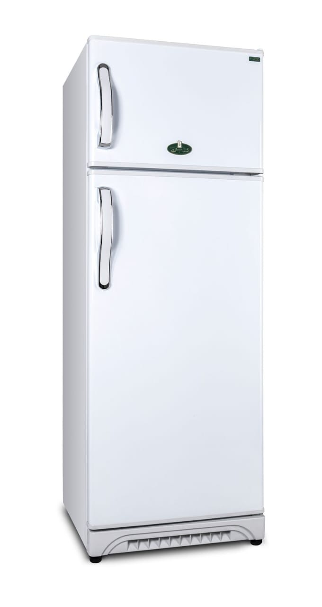
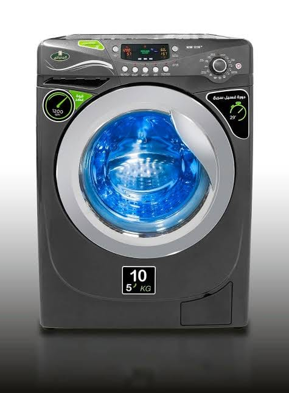
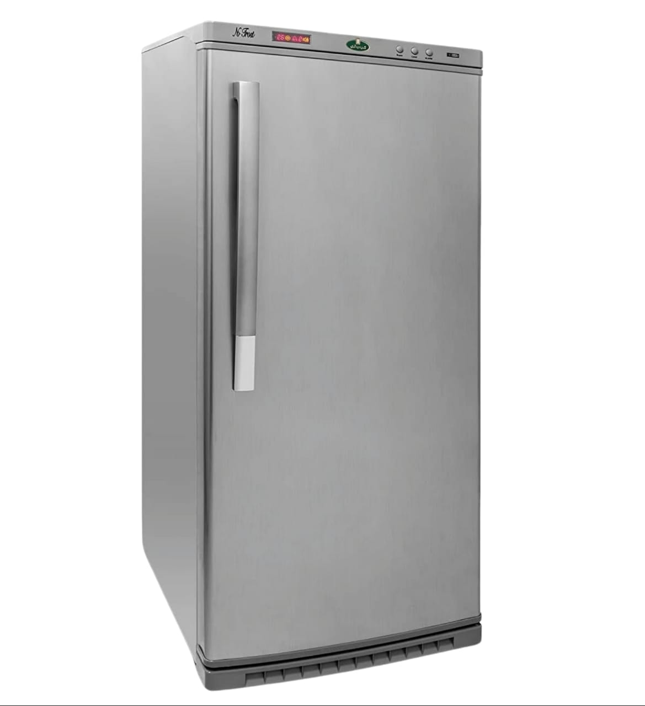
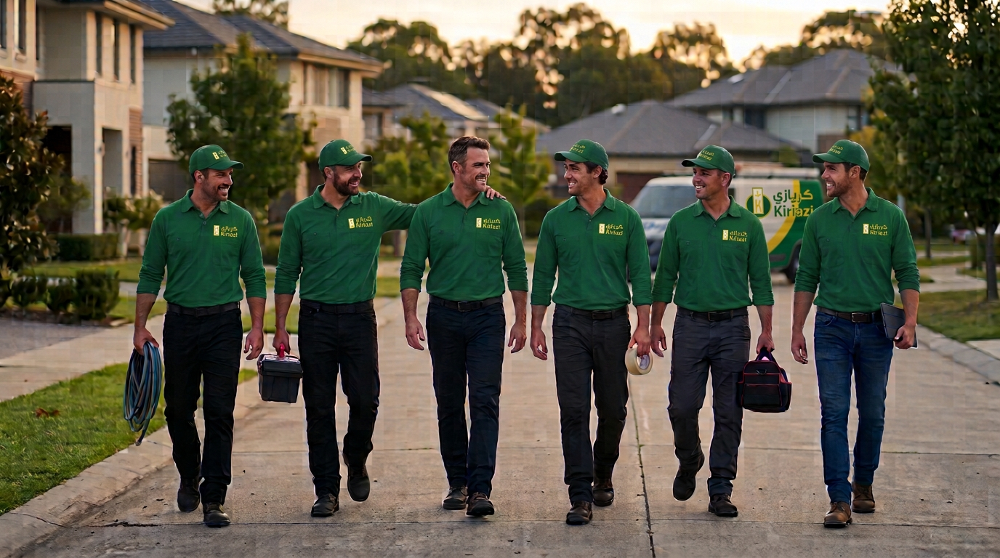

خدمة الثلاجات
صيانة وفحص الثلاجات
مساعدة في تشخيص مشكلات ضعف التبريد، وتسريب المياه، وارتفاع صوت الثلاجة، وعدم انتظام التشغيل.
☎ اتصل الآنمعلومات وخدمات فحص وصيانة للثلاجات والغسالات والديب فريزر، مع مقالات إرشادية تساعدك على فهم الأعطال والعناية بجهازك.
تعرف على خدمات كل جهاز، واتصل مباشرة لشرح العطل وطلب المساعدة.

مساعدة في تشخيص مشكلات ضعف التبريد، وتسريب المياه، وارتفاع صوت الثلاجة، وعدم انتظام التشغيل.
☎ اتصل الآن
فحص مشكلات عدم سحب المياه أو تصريفها، وعدم إتمام دورة الغسيل، والاهتزاز أو صدور أصوات غير معتادة.
☎ اتصل الآن
متابعة مشكلات ضعف التجميد، وتراكم الثلج، وعدم ثبات درجة الحرارة، وتسريب المياه أو الضوضاء.
☎ اتصل الآن
ابدأ بمكالمة هاتفية واشرح المشكلة، وسنساعدك في معرفة الخطوة المناسبة لفحص الجهاز وطلب خدمة الصيانة.
اختر نوع الجهاز وتواصل معنا لمعرفة تفاصيل الخدمة وحجز موعد الفحص.
جهاز تم فحصه وصيانته
نسبة رضا العملاء
سنة خبرة في المجال
سرعة استجابة وتواصل
معلومات عملية تساعدك على فهم الأعطال الشائعة والعناية بالثلاجة والغسالة والديب فريزر.
قد تلاحظ أن الطعام لا يظل باردًا كالمعتاد أو أن التبريد أصبح أضعف من السابق. ابدأ بالتأكد من أن باب الثلاجة يُغلق بإحكام، وأن فتحات توزيع الهواء الداخلية غير محجوبة بالأطعمة. كما يُفضّل عدم وضع أطعمة ساخنة مباشرة داخلها وترك مساحة مناسبة حول الجهاز للتهوية.
إذا استمر ضعف التبريد، أو لاحظت تغيرًا واضحًا في صوت التشغيل أو تكون مياه أسفل الثلاجة، فقد تحتاج إلى فحص فني لتحديد السبب بدلًا من محاولة فك الأجزاء بنفسك.
اطلب فحص الثلاجة ←من المشكلات المتكررة بقاء المياه داخل حلة الغسالة بعد انتهاء البرنامج. قد يرتبط ذلك بانسداد فلتر التصريف أو التواء خرطوم الصرف أو وجود جسم صغير يعيق خروج المياه.
افصل الكهرباء قبل أي فحص بسيط، وراجع دليل الاستخدام لمعرفة طريقة تنظيف الفلتر الآمنة لطراز جهازك. إذا استمرت المشكلة أو ظهر تسريب، لا تكرر تشغيل الغسالة؛ اطلب فحصًا لتجنب زيادة العطل.
اطلب فحص الغسالة ←ضعف التجميد قد يحدث عند تكرار فتح الباب، أو عدم إحكام الجوان، أو تحميل الجهاز بكميات كبيرة تمنع حركة الهواء البارد. تأكد من إغلاق الباب جيدًا ومن عدم وجود عبوات تعوقه.
إذا لم تتحسن درجة التجميد، أو لاحظت أن الجهاز يعمل باستمرار أو يصدر صوتًا غير معتاد، فالأفضل طلب فحص متخصص. لا تحاول التعامل مع دائرة التبريد أو المكونات الكهربائية بنفسك.
اطلب فحص الديب فريزر ←التنظيف الدوري واتباع تعليمات التشغيل يساعدان على تقليل المشكلات اليومية. اترك مسافة تهوية مناسبة حول الأجهزة، ولا تضع أحمالًا أكبر من السعة الموصى بها، ونظف الأجزاء المخصصة لذلك حسب دليل الاستخدام.
انتبه لأي تغير مفاجئ في الأداء أو الصوت أو استهلاك الكهرباء. اكتشاف المشكلة مبكرًا يساعد على تحديد سببها قبل أن تتفاقم، مع ضرورة الاستعانة بفني عند وجود عطل كهربائي أو ميكانيكي.
تواصل للاستفسار ←اضبط درجة الحرارة وفق إرشادات الشركة المصنّعة، وتجنب تكديس الأطعمة أمام فتحات الهواء. افحص إطار الباب دوريًا للتأكد من نظافته وإحكام الغلق، ولا تترك الباب مفتوحًا لفترات طويلة.
يساعد ترتيب الطعام وترك مساحة لحركة الهواء على توزيع البرودة بصورة أفضل. وإذا ظهر تكاثف غير معتاد أو مياه متكررة أسفل الجهاز، سجّل متى تظهر المشكلة واطلب فحصًا عند استمرارها.
استفسر عن صيانة الثلاجة ←قد ينتج الاهتزاز عن عدم استواء الأرضية أو عدم توزيع الملابس بالتساوي داخل الحلة أو تحميل الغسالة بأكثر من سعتها. أوقف البرنامج إذا كان الاهتزاز شديدًا، ثم تأكد من ثبات الجهاز وتوزيع الحمولة بعد الرجوع إلى دليل التشغيل.
إذا استمر الصوت رغم ضبط الحمولة واستواء الجهاز، فقد يكون هناك سبب يحتاج إلى فحص فني. لا تفتح جسم الغسالة أو تحاول إصلاح الأجزاء الداخلية بنفسك.
اطلب فحص الغسالة ←قد يؤدي فتح الباب كثيرًا أو عدم إحكام إغلاقه إلى دخول هواء رطب وتكوّن الثلج. افحص سلامة الإغلاق ونظافة الحواف، وتجنب إدخال أطعمة ساخنة أو ترك الباب مفتوحًا أثناء ترتيب المحتويات.
اتبع تعليمات إزالة الثلج الواردة في كتيب الجهاز، ولا تستخدم السكاكين أو الأدوات الحادة لإزالة الثلج حتى لا تتلف السطح الداخلي أو أجزاء التبريد. عند تكرار التراكم بسرعة، اطلب فحصًا.
استفسر عن صيانة الديب فريزر ←إذا لاحظت رائحة احتراق، أو شررًا، أو سخونة غير طبيعية في القابس، أو تسريب مياه بالقرب من التوصيلات الكهربائية، افصل الجهاز من مصدر الكهرباء إذا كان ذلك آمنًا ولا تعاود تشغيله قبل الفحص.
كذلك لا تحاول إصلاح الأسلاك أو الضاغط أو دائرة التبريد بنفسك. اشرح الأعراض ووقت ظهورها عند الاتصال حتى يسهل تحديد طبيعة المشكلة والخطوة المناسبة.
اتصل للاستفسار ←لتسهيل شرح المشكلة، جهّز نوع الجهاز وطرازه إن أمكن، ووصفًا مختصرًا للعَرَض، ومتى بدأ، وهل يظهر باستمرار أم على فترات. يمكنك أيضًا توضيح ما إذا كانت هناك لمبة تحذير أو رمز خطأ ظاهر على الشاشة.
لا تفك الجهاز أو تنفذ خطوات إصلاح غير موصى بها. المعلومات الواضحة تساعد على فهم الحالة مبدئيًا وتحديد طريقة المتابعة المناسبة.
اتصل الآن ←إليك بعض الإجابات التي قد تساعدك قبل التواصل.
يمكنك التواصل للاستفسار عن الثلاجات والغسالات والديب فريزر، وشرح نوع الجهاز والعطل الظاهر.
اتصل على 01122269993، واذكر نوع الجهاز والمشكلة التي تواجهك لمعرفة تفاصيل الخطوة التالية.
يُنصح بالاكتفاء بالفحوصات البسيطة المذكورة في دليل الاستخدام. افصل الكهرباء عند وجود خطر، ولا تفتح الأجزاء الكهربائية أو دائرة التبريد.
لا، الموقع يقدم معلومات للتواصل بشأن خدمات صيانة مستقلة، ولا يمثل الموقع الرسمي للشركة أو يدّعي الاعتماد منها.
ثلاث خطوات سهلة لبدء طلبك.
تواصل على الرقم 01122269993.
اذكر نوع الجهاز والعطل الظاهر عليه.
تعرّف على تفاصيل الفحص والخطوة التالية.
اتصل الآن وتحدث مع فريق خدمة العملاء.